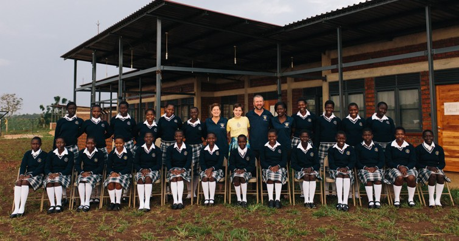

| Home | Angel House | Hope Clinic | Amazima |

Amazima was formed by Katie Davis, a 19 year old who decided to live life for Jesus. Through Katie's efforts, Amazima was created. This school provides Christ-centered education and housing for over 800 Ugandan children.
Talents Empowered supports family mentors at Amazima, which are people who live with the students and act as "school parents." The Bookers serve as family mentors. Last year, Joe Booker took his wife and teenage daughter and together they picked up their suburban life and moved it to Uganda, where they now serve as house parents to several Ugandan students. They chose to follow God's calling, and as a result are able to impact dozens of at-risk students every day. Talents Empowered proudly supports the Booker family.
To read more about Amazima, click here